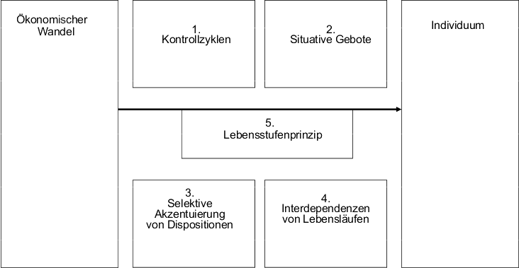
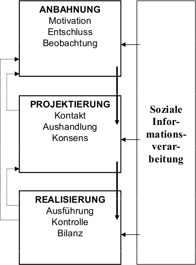

© 2015 Martin Freidank
veröffentlicht unter der GNU Free Documentation License
Github: https://github.com/Deux9/sturzbecher_ss_2015 für druckoptimierte PDF und Sourcecode
JV 9.2 -- Risikoverhalten
Erklären Sie jugendtypische Geschwindigkeitsübertretungen im motorisierten Straßenverkehr aus der Perspektive kognitions-, emotions- und neuropsychologischer Ansätze und erläutern Sie, inwieweit diese Ansätze jeweils empirisch gesichert sind. Stellen Sie jeweils einen sozialwissenschaftlichen und einen integrativen Ansatz zur Erklärung von Risikoverhalten vor und benennen Sie seinen Inhalt bzw. seine Besonderheiten!
Psychologischer Erklärungsansatz
Kognitionspsychologischer Ansatz
Adoleszenter Egozentrismus (kognitive Defizite)
- Selbsteinschätzung als "einzigartig" → Selbstüberschätzung
- "Invincibility Fable": Unverwundbarkeitseinschätzung aufgrund mangelnder Erfahrung
- "Imaginary Audience": Projektion der eigenen Gedankenwelt auf Andere, Bedürfnis nach Selbstproduktion
- empirisch eher wenig gesichert: hoher Egozentrismus, geringe Risiken
Decision-Making Perspective
Defizite bei der Verarbeitung sozialer Informationen
- Verhalten als Folge von Entscheidungen
- Schritte des Decision-Making:
- Identifizieren möglicher Optionen und Konsequenzen
- Bewerten der Wünschbarkeit und Wahrscheinlichkeit der Konsequenzen
- Zusammenführen aller Informationen zu einer Entscheidung
- Empirie: keine eindeutigen Aussagen über Entscheidungsprozesse in Risikosituationen, Jugendliche neigen zum Unterschätzen von Langzeitfolgen → keine Evidenz für bestimmenden Einfluss der Qualität informationsverarbeitender Prozesse
Emotionspsychologischer Ansatz
- Risikoverhalten als Folge unzureichender Affektregulation
- Hypothese: Entscheidungen von Jugendlichen stärker durch affektive Zustände beeinflusst, weil Fähigkeiten zur Affektregulation schwächer ausgeprägt sind
- Empirie: Bestätigung der Hypothese, Hinweise auf alterskorrelierte Impulsivitätsunterschiede
Neuropsychologischer Ansatz
- Hirnregion für Verhaltensplanung, Entscheidungsfindung, Impulskontrolle und Risikoeinschätzung während des Jugendalters starker Veränderung unterworfen
- Körper kann Risiko belohnen → genetische Neigung mancher Menschen
Persönlichkeitspsychologische Perspektive
- "Sensation Seeking": Suchen abwuchslungsreicher, komplexer und starker Empfindungen und Erfahrungen unter Inkaufnahme von Risiken
- teilweise genetisch determiniert
- geachtetes Konstrukt geschlossener biopsychosozialen Persönlichkeitstheorie
- Kritik: Vernachlässigung von kognitiven Aspekten, Sozialisationskontexten und leistungsthematischen Komponenten → Umgebungseinflüsse, Kritik an der Methode des SS-Tests
Sozialwissenschaftliche Erklärungsansätze (nur einen lernen)
Sozialpsychologische Perspektive
- "Risky Shift"-Phänomen: In der Gruppe getroffene Entscheidung riskanter
- Diffusion der Verantwortung: Individuum „versteckt sich hinter Gruppe“
- Informationsniveau: erhöhte Anzahl von Argumenten und Sichtweisen → objektiverer Eindruck
- Führerschaft: risikofreudige Führerfigur lässt verstärkende Risikoargumente eher zu und verstärkt diese
- Risikobereitschaft als sozialer Wert: Status innerhalb der Gruppe
Integrative Erkärungsansätze (nur einen lernen)
Theorie des jugendlichen Leichtsinns
- Synthese verschiedener Ansätze, multidimensional, kulturübergreifend
- gleiche jugendtypische Faktoren: z.B: Sensationssuche
- damit verbunden: Mangel an verhaltensleitenden Wertorientierung und konventionellen Bindungen
- Formen und Auftretenshäufigkeit von Risikoverhalten durch soziokulturellen Kontext, bzw. Sozialisationskontext bestimmt
- "Breite Sozialisation" (Individualität und Autonomie begünstigt) vs.
- "Enge Sozialisation" (Gehorsam und Konformität als höchste Werte)
JV 10.2 -- Armut
"Wird Armut vererbt?" "Einmal arm – Immer arm?" Diskutieren Sie diese beiden Fragen unter Berücksichtigung des Konzepts der intergenerativen Armutstransfers sowie aktueller Entwicklungen bezüglich der Einkommensmobilität in Deutschland und den USA! Beschreiben Sie den Zusammenhang zwischen ökonomischem Wandel, Familienentwicklung und Persönlichkeitsentwicklung anhand des theoretischen Modells von Elder & Caspi! Wie wurde dieses Modell erarbeitet?
intergenerativer Armutstransfer
Annahme: Kinder aus armen Familien haben aufgrund ungünstiger Sozialisationsbedingungen schlechtere Chancen auf dem Ausbildungs- und Arbeitsmarkt
Armut hat Einfluss auf:
- Familiengröße
- Fehlernährung, Krankheiten und medizinischer Unterversorgung von Kindern
- soziale und Umweltdeprivation von Kindern
- Schulversagen
- schließlich Arbeitslosigkeit
Empirie:
- DE: keine systematischen Verlaufsuntersuchungen
- USA: junge Erwachsene mit Sozialhilfehintergrund haben höheres Armuts- und Sozialhilferisiko, allerdings mehrheitlich Überwindung
Einkommensmobilität
Armut als mehrheitlich zeitlich begrenze Folge der Dynamik familiärer Einkommensverhältnisse
Gegenkonzept zum integenerativen Transfer: phasenweise Armut
- zeitlich begrenzte Armut
- 75% nie von relativer Einkommensarmut -- 6% wiederholt betroffen
Heterogene Armutserfahrungen:
- hohe Einkommensmobilität in unteren Lagen
- krisenhafte Phasen der Sozialhilfebedürftigkeit meist schnell überwunden
- Deprivation und Passivität selten, meist aktive Bewältigungsversuche
Ökonomischer Wandel, Familie und Persönlichkeit: "Theorie des Lebensverlaufs"
Entwicklung der Theorie
- ab 1900: neuartige, multiple Problemlagen und und individuelle Anpassungsprozesse der Lebensgestaltung im Blick der Forschung
- Mitte 20. Jh: Wechselwirkung zwischen individuellem Verhalten und gesellschaftlichem Wandel über Lebensspanne theoretisch konzeptualisieren → Kohorten-Ansätze
Vergleichsstudie von Elder
Untersuchung: Längsschnittstudie Jahrgänge 1920/21 und 1928/29
in 30er Jahren 3 Arten der Veränderungen als Unterschied von deprivierten und nicht deprivierten Familien - Haushaltsökonomie - Familienbeziehungen - sozial verursachter Stress
Kohortenunterschied:
- ältere Kohorte:
- alt genug für gefestigtes Entwicklungsfundament und Verantwortungsübernahme
- kaum dauerhafte Nachteile
- jüngere Kohorte:
- abhängiger von familialer Zuwendung und Unterstützung
- zerstörerischer Einfluss der Deprivation auf Familienleben
- weniger Optimismus und Selbstbewusstsein
- geschlechtsspezifische Entwicklungskonsequenzen
Modell

- Kontrollzyklen
- Diskrepanz zwischen Ansprüchen und Ressourcen
- Sozialer Wandel und/oder ökonomische Deprivation: Erlebnis Kontrollverlust
- Individuen setzen sich mit Umwelt auseinander, um Kontrolle wieder zu erlangen
- Zyklus: Produktion und Reduktion der Diskrepanzen, häufig Wendung des Lebenslaufs
- Situative Gebote
- Wendungen auch von historisch vorstrukturierter Situation im Lebens- und Entwicklungskontext abhängig
- Situation stellt Handlungsanforderungen an den Einzelnen → "Situative Gebote"
- Selektive Akzentuierung von Dispositionen
- um situative Gebote zu bewältigen: Anpassung der Betroffenen
- vorhandene Eigenschaften entsprechend ihrer Nützlichkeit akzentuiert
- Interdependenz von Lebensläufen:
- sozialer Kontext der Betroffenen und Qualität der sozialen Beziehungen moderiert Effekte des sozialen Wandels
- Lebensstufenprinzip
- Entstehung und Bewältigung der Diskrepanzen verlaufen abhängig von den sich im Laufe des Lebens verändernden Entwicklungsaufgaben und -voraussetungen des Individuums
JV 12.1 -- Jugend und Partizipation
Was versteht man unter "Partizipation" und "partizipativem Handeln" im Vergleich zu "Kooperation" und "kooperativem Handeln"? Welchen Nutzen haben partizipative Handlungsspielräume in Bildungseinrichtungen? Erläutern Sie, wie Partizipation auf der interaktionalen Ebene "funktioniert"! Beschreiben Sie kurz konsultative Partizipationsformen Heranwachsender!
Begriffe
- Partizipation: Kooperation von Individuen mit einer sozialen Gruppe oder die Kooperation von sozialen Gruppen
- partizipatives Handeln:
- individuelle Aktionen, die Partizipation anstreben oder verwirklichen
- eigene Intentionen mit Normen und Handlungsplänen der Gruppe durch Aushandlungsprozesse in Übereinstimmung gebracht
- und als Teil eines einvernehmlichen gemeinsamen Handlungsplanes von Individuum und Gruppe verwirklicht
- Kooperation:
- raum-zeitlich koordiniertes Zusammenwirken von Individuen unter einer Leitung
- gemeinsames Ziel mittels gemeinsamer Strategie verwirklicht
- kooperatives Handeln:
- individuelle Aktionen, die Kooperation anstreben oder verwirklichen
- eigene Intentionen mit denen anderer durch Aushandlungsprozesse in Übereinstimmung gebracht.
Partizipation als Sonderform der Kooperation mit spezieller Beteiligung von Gruppen
Nutzen von partizipativen Handlungsspielräumen in Bildungseinrichtungen
- Übung demokratischen Handelns - politische Stabilität
- Akzeptanz für Autoritätsentscheidungen
- Maximierung des Lerngewinns
Funktion von Partizipation

- in allen Phasen werden soziale Informationen aufgenommen, gespeichert, interpretiert und in Verhalten umgesetzt
- Anbahnung gelungen: Gruppendruck gegenüber eigenen Interessen (Gruppenpolarisierung)
- Durchsetzen eigener Interessen: "Minoritäteneinfluss"
- erfolgreich, wenn abweichende Meinung konsistent vertreten
- offene Formen:
- nicht gewählte Vertreter agieren
- Beteiligung und Meinungsäußerung aller
- projektorientiert:
- regelmäßige Treffen von Kindern über begrenzten Zeitraum zu bestimmten Themen
- Kinder besitzen früh Partizipationskompetenzen und setzen diese bei geeigneten Möglichkeiten ein
- parlamentarisch
- Gremienwahl, um stellvertretend für Interessen einzutreten
- inhaltliche und formale Orientierung an herkömmlichen Politikformen
JV 13.1 -- Werte
Was sind "Werte" und welche Funktion haben sie? Beschreiben und vergleichen Sie die theoretischen Grundpositionen und methodischen Operationalisierungen (Messinstrumente) von Ronald Inglehart ("Wertewandel") und Helmut Klages ("Wertesynthese")! Nennen Sie je zwei Beispiele für materialistische und postmaterialistische Wertorientierungen!
Definition und Funktion
- grundlegende Orientierungen von Individuen und sozialen Gruppen
- emotional besetzte Vorstellungen über das gerechtfertigt Wünschenswerte → handlungswirksam und verhaltenssteuernd
- verankert in Normen, Persönlichkeits- und Motivationsstruktur in Gesellschaft → stabilitätsfördernd
- Diagnostische Funktion:
- Kenntnis von gesellschaftlichen Werten → Kultur
- Kenntnis von Werten einer Person → Lebensziele
Wertewandel vs. Wertesynthese
Wertewandel nach Inglehart
- Ablösung traditionsgebundener Werter durch Neue → Wertesubstitution
- hierarchisch in bipolarem Kontinuum zwischen Materialismus und Postmaterialismus
Mangelhypothese:
- Prioritäten reflektieren sozioökonomisches Umfeld
- größter subjektiver Wert sind Dinge, die zu knapp sind
Sozialisationshypothese:
- Intra-individuelle Stabilität
- Wertvorstellungen spiegeln vorherrschende Bedingungen der Jugendzeit wider
Methodik:
- Ra nk ing-Verfahren von Wertorientierungen: Inglehart-Index
- zwei Pole schließen sich aus → "Forced choice situation"
Wertesynthese nach Klage
- zwei unabhängige Wertgruppen:
- Pflicht- und Akzeptanzwerte: Selbstkontrolle
- Selbstentfaltungswerte: Befreiung von Zwängen
- Wertesynthese: Beide Wertgruppen von Wertewandel betroffen. Keine exklusiven Pole → keine Verschiebung sondern Rekombination
Lebenszyklus-Hypothese
- Veränderungen individueller Wertorientierungen durch Anspassung an lebensphasenspezifische Rollenanforderungen möglich
Methodik:
- Ra t ing-Verfahren: voneinander unabhängige Pflicht- und Selbstentfaltungswerte sollen nach Indikatoren einzeln hinsichtlich ihrer Wichtigkeit beurteilt werden
- Möglichkeit gleichrangiger Orientierung auf verschiedene Werte
Beispiele für Wertorientierungen:
- materialistisch:
- Psychologische Grundbedürfnisse: Atmung, Trinken, Nahrung, Schlaf
- Sicherheit: Wohnung, Job, Gesundheit
- postmaterialistisch:
- Soziale Bedürfnisse: Partnerschaft, Kommunikation, Freunde
- Individualbedürfnisse: Status, Macht, Karriere
JV 14.1 -- Zukunftserwartungen
Erläutern Sie, was "Zukunftserwartungen" sind, wozu sie dienen und in welchem Zusammenhang sie zu Persönlichkeitsmerkmalen wie Selbstwirksamkeits- und Kontrollüberzeugungen stehen! Was versteht man unter "Heimatverbundenheit" und welche Faktoren beeinflussen die Heimatverbundenheit bzw. die Zufriedenheit mit dem Heimatort bei Jugendlichen nachweislich (vier Beispiele)? Beschreiben Sie das Migrationsverhalten von (ostdeutschen) Frauen einschließlich ihrer Beweggründe für Migration! Nennen Sie Schlussfolgerungen für eine erfolgreiche Regionalpolitik!
Definition
psychische Repräsentationen über zukünftige Lebensereignisse
- positiv: Wünsche, Hoffnungen
- negativ: Befürchtungen, Ängste
Fusion: Orientierungs- und Strukturieungshilfe für die Lebenshilfe
Zukunftserwartungen und Persönlichkeit
- verschiedene Planungs- und Verhaltensrelevanz individueller und gesellschaftlicher Zukunftserwartungen → unterschiedlicher Zusammenhang zum Selbstwirksamkeitserleben
- Überschätzung eigener Handlungsfähigkeit motiviert und ist selbstwertstabilisierend, -erhöhend
- Kontrollüberzeugungen: Erwartungen, inwieweit das egeiene Handeln und seine Folgen dem eigenen Einfluss zugänglich sind
- External: fremde Mächte (Gott)
- Internal: eigenen Glückes Schmied
- internale Kontrollüberzeugung hat direkten Einfluss auf Zukunftserwartungen (internal → Optimismus, external → Blockade positiver Zukunftserwartung)
Heimatverbundenheit
emotionale Identifikation mit einer vertrauten Region
- soziale Zugehörigkeit
- Geborgenheit
- Interesse am kommunalen Geschehen
- Verpflichtung
Einflussfaktoren für Heimatverbundenheit
- Soziodemografische Angaben (Alter, Geschlecht, Wohnort)
- Lebensziele (Familienorientierung, Beruf)
- Soziale Netzwerke (Freundschaften, Vereine)
- Ressourcen der Kommune (Bevölkerung, Arbeitsmarkt)
Migrationsverhalten von ostdeutschen Frauen
- Gründe
- Partnermarkt (am Häufigsten)
- Bildung: Aussicht auf Qualifizierung
- Soziale Netzwerke
- Mütter mit Kindern weniger mobil - mehr Wanderung von kinderlosen Frauen
- Exogene Faktoren
- Arbeitsplatzangebot
- Lebensbedingungen
- Image der Region
- sozio-ökonomischer Status
- Indogene Faktoren
- Qualifikation
- Berufsorientierung
- Motivation -Familienorientierung
- erleichternde Faktoren
- Migrationsnetzwerke
- Mobilitätsbeihilfen
- Beispiele von Freunden, Verwandten
Erfolgreiche Regionalpolitik
- Berücksichtigung von Frauen als wichtiger Migrantengruppe und Doppelorientierung von Familie und Beruf
- Investition in wirtschaftliche Leistungsfähigkeit, Stärkung der Rahmenbedingungen, Stärkung der Familie, Nachbarschaft, Kultur, Lebensqualität
- Arbeitsmarkt, der Vereinbarkeit von Beruf und Familie ermöglichst
- Attraktive Studien- und Ausbildungsangebote
FV 8.2 -- Kinderwunsch
Beschreiben Sie den historischen Wandel des Kinderwunsches aus der Perspektive des Rational-Choice-Ansatzes! Stellen Sie dar, wie sich die historischen Veränderungen auf die Bedingungen des Aufwachsens für Kinder im Allgemeinen und auf die Eltern-Kind-Beziehung im Besonderen auswirken!
Grundlagen Rational Choice
- Mensch als subjektiv rationaler Akteur: zielgerichtet handelnder Nutzen-Maximierer
- resourceful, restricted, expecting, evaluating, maximizing man
- menschliches Handeln als Lösen von Problemen: Bedürfnisse Befriedigen und Ziele erreichen → Notwendigkeit sozialen Handelns (fremde Ressourcenkontrolle)
Rational Choice und Kinderwunsch
- Dimensionen der elterlichen Nutzenerwartungen an Kinder
- materiell
- psychologisch
- sozial-normativ
- technischer Industrialisierungsgrad ~ immaterielle Nutzenerwartungen
- Absicherung im Sozial- und Wohlfahrtsstaat: kein materieller Anreiz für Kinder
Kinder als finanzielle Belastung
- Ziel: Kindern optimale Bedingungen bieten
- abgeschlossene Ausbildung
- beruflich abgesichert
- gute Finanz- und Wohnverhältnisse
- heute mehr Leistungen von Eltern mobilisiert (Beziehungen, ökonomischer Aufwand, zeitlicher Umfang)
- Armutsrisiko steigt mit Kinderzahl
- Kinder als Schwächung der individuellen Arbeitsmarktchancen (Flexibilität etc.)
Aufwachsen und Wandel der Eltern-Kind-Beziehung
- Fortgeschrittene Industriegesellschaften: Kind als "Wunschkind" immaterieller Sinnerfüllung
- große Ansprüche an Kinder: Mängel korrigieren, Anlagen stärken
- Erziehung als Konkurrenzkampf
- Frühforderung → Karrierevorsprung
- Erziehungsdruck: traditionelle Erziehung problematisiert → Übererziehung und/oder vernachlässigte Erziehung
- Folgen: Stress und Erschöpfung der Kinder
- Geburtenrückgang beeinflusst innerfamiliale Interaktion qualitativ und quantitativ, da Gruppenstruktur und -dynamik durch Gruppengröße bestimmt
- Eltern als vermehrte Bezugspersonen, da weniger Geschwister/Gleichaltrige vorhanden
- stabileres Familiensystem bei elternunabhängigen Triaden: fehlt in Zwei-Kind-Familien → intensivierte Eltern-Kind-Beziehungen
Veränderung der Elternrolle
- Umgang mit Kindern ist wichtiger Bezugspunkt der elterlichen Orientierung geworden → Kinder als Träger des Lebenssinns der Eltern
- erhöhte Ansprüche an elterliche Erziehungsleistung
- Eltern als Partner der Kinder → Möglichkeit, individuelle Interessen auszuhandeln
Liberalisierungstendenzen
- Rangverminderung von Pflicht- und Akzeptanzwerten, Bedeutungsgewinn von Selbstentfaltungswerten
- Liberalisierung der Erziehungskultur (Befehls- -> Verhandlungshaushalt)
FV 10.2 -- Väter
Beschreiben Sie die fünf Phasen in der Entwicklung der Vaterforschung nach Fthenakis! Welche Forschungsfragen sind noch offen (nennen Sie 6 Beispiele)? Erläutern Sie, welche Forschungsergebnisse zum väterlichen Engagement vorliegen! Skizzieren Sie drei theoretische Ansätze und dazugehörige Forschungsbefunde zum Ausmaß väterlichen Engagements!
Phasen in der Entwicklung der Vaterforschung nach Fthenakis
- Anfangsphase
- Kulturanthropologische Arbeiten: elterliches Rollenverhalten ist kulturell bedingt und veränderlich
- Tierexperimentelle Arbeiten: Frage nach biologischer Determiniertheit väterlichen Verhaltens
- Vaterabwesenheit (Kriegsende bis Ende 60er): defizitorientierte Ansätze
- kognitive Kindesentwicklung: Vaterverlust am negativsten im frühen Kindesalter von langer Dauer
- moralische Kindesentwicklung: viele delinquente Jugendliche vaterlos, Entwicklungsrückstände bei Jungen
- Übertragung von Fragestellungen und Methodologie aus Mutterforschung in Vaterforschung (60er-70er): Partizipation des Vaters an haushalts- und kindbezogenen Aufgaben? Qualität der Vater-Kind-Beziehung?
- Kleinkinder können ähnlich intensive Bindungen zu Vater und Mutter entwickeln
- Überwindung der natürlichen Exklusivität der Mutter-Kind-Beziehung
- systemische Perspektiven (Ende 70er)
- gute Partnerschaft fördert Wohlbefinden der werdenden Mutter
- Nachteil der Phase: Rollenverteilung zu wenig differenziert
- integrierter Bestandteil der Familienforschung (seit Beginn 90er)
- Integration der soziologischen Perspektiven in Konstrukten der psychologischen Androgynie
- stark an Erziehung beteiligte Väter können instrumentelle und expressive Funktionen nach Parsons' Rollentheorie haben und zeigen gegenüber Kindern breiteres Verhaltensspektrum als Väter in klassischen Familien
- Kinder engagierter Väter empathischer und strebsamer nach besseren Leistungen und Selbstständigkeit
- Vater- und Mutterrolle nicht mehr mit klassischer Aufteilung zu beschreiben
Sechs offene Forschungsfragen
- Sozialisationsbeitrag eines Vaters, der nicht mit Kind zusammenlebt?
- Bedingungen für positive Förderbeiträge des Vaters?
- Beitrag des Kindes für Engagement des Vaters?
- Bedeutung Stiefväter?
- Veränderung des väterlichen Engagements?
- Genetische Bedingung des väterlichen Betreuungsbeitrags?
Väterliches Engagement
Forschungsergebnisse
- Engagement u.a. abhängig von Berufstätigkeit der Mutter, eigener und der Partnerin Geschlechts- und Elternrollenorientierung sowie Partnerzufriedenheit
- stärkeres Engagement bei leiblichen Kindern
- bei sehr kleinen Kindern weniger Einsatz
- am aktivsten im Schulalter, besonders beim Spielen
- Mittelschichtsväter am engagiertesten
- stärker bei Söhnen
Theorieansätze
New Home Economics Theory
- Partner mit höherem Einkommen weniger Zeit für Haushaltstätigkeit -> Maximierung des Haushaltseinkommens
Rollentheoretische Perspektive
- geschlechtsspezifische Sozialisation als Schlüssel zum Verständnis familialer Aufgabenteilung
- traditionelles Rollenverständnis -> traditionellere Rollenteilung
- viel empirische Bestätigung
familienzyklischer Ansatz
- Entwicklung der Familie -> veränderte Anforderungen und Beziehungsmuster
- Erklärung für unterschiedliche väterliche Partizipation in bestimmten Phasen der Familienentwicklung
FV 11.1 -- Großeltern
Welche Rolle spielen Großeltern bzw. welche Funktionen erfüllen sie? Gehen Sie auf den historischen Wandel der Bedingungen für Großelternschaft, auf Zukunftstrends und auf das veränderte Rollenverständnis von Großeltern ein! Skizzieren Sie kurz die Formen des intergenerativen Leistungstransfers zwischen Großeltern und Enkeln und beschreiben Sie die Kontextfaktoren, die auf seine Realisierung einwirken!
Rolle und Funktion
- keine feste Rollendefinition -> keine feste gesellschaftliche Funktion
- Große Verhaltensvariabilität
- Unterstützungsfunktion im Hinblick auf funktionale, spezialisierte Leistungserfüllung durch die Familie
- Unterstützung der Sozialisation von erwachsenen Kindern und Enkeln erwartet
- Selbstzuschreibung der Sozialistationsaufgabe der Enkel
- ergänzend und kompensierend zum Erziehungsauftrag der Eltern
- Doppelte Eltern-Rolle: direkt bei Kindern, latent bei Enkeln
- Elternrolle minderen Rechts, weniger Verantwortung für Enkel + reduzierter Kontakt als Eltern
- Recht auf Umgang mit Enkeln
Historischer Wandel von Großelternschaft
- steigende Lebenserwartung im 20. Jahrhundert sorgt für Zeit mit Enkeln
- Demographische Entwicklung
- weniger Verbindlichkeit kulturell institutionalisierter Rollenkonzepte
- modernes System staatlicher Vorsorge
- veränderte Bedeutung des Kindes
- Technischer Fortschritt
- Erfahrungsaustausch zwischen Großeltern und Enkeln
Zukunftstrends
- Bohnenstangenfamilie
- Mehr Einzelkinder von vier Großeltern verwöhnt
- Antieg Kinderlosigkeit, steigenden Anzahl von enkellosen alten Menschen
verändertes Rollenverständnis
- distanziert-respektvolle hierarchisch strukturierte Beziehung -> Wärme, Nähe Zuneigung und Freundschaft
- Gemeinsame Freizeitaktivitäten
- Fehlen direkter Erziehungsverantwortung
- Generationsverhältnis ausgehandelt (Verantwortung, Pflichten, Absprachen)
intergenerativer Leistungstransfer
- wechselseitig ausgewogener Austausch immaterieller und materieller Leistungen
- Zeit und Fürsorge
- Materielle Leistungen
- Wissen und Können
- Familie als Solidargemeinschaft in Frage gestellt
- Freiheit und Selbstverwirklichung -> Abneigungen gegenüber langfristiger Verpflichtungen
- materielle Leistungen von oben nach unten
Kontextfaktoren
- soziodemographische und ökonomische Faktoren
- staatliche Transferleistungen
- Familiäre Ereignisse und familienzyklische Phasen
FV 11.2 -- Lebenssituation der Großeltern
Beschreiben Sie kurz die Lebenssituation der Großelterngeneration (z.B. Einkommens- und Wohnsituation, Lebenszufriedenheit). Erläutern Sie die (soziologische) Herkunft und den Inhalt der Begriffe "Generation", "Generationenkonflikt" und "Generationenvertrag"! Welche Einflussfaktoren beeinflussen die intergenerativen Transfers? Wodurch wird der Fortbestand des Generationenvertrags belastet?
Lebenssituation
- bessere Einkommen, Gesundheit und Bildung als früher
- wenig Armut und Reichtum
- leben fast ausschließlich in Ein-Generationen-Haushalten, aber viele in Drei-Generationen-Netzwerk
- sollen länger in Erwerbsleben eingebunden werden
- kaufkräftige Zielgruppe
- Zufrieden
Generationenkonflikt nach Mannheim
- Menschen derselben Geburtsjahrägnge (=Generation) machen im selben Sozialraum während des Aufwachsens vergleichbare sozio-politische Erfahrungen -> spezifische soziale Gruppe
- Zugehörigkeit zu Generation beschränkt Mitglieder in Erlebnis- und Chancenverwertungsmöglichkeiten und prädisponiert für Denkweisen -> Einstellungen und Werte können in Konflikt mit älteren Generationen geraten
Generationenvertrag
- wechselseitige Verpflichtungen und Erwartungen über Austausch zwischen Familienmitgliedern verschiedener Generationen
- drei Arten von Verpflichtungen
- Biosoziale Nachfolge: Jede Generation zieht Kinder auf (sozialisation)
- Gerosoziale Nachfolge: Jede Generation stellt zum Aufziehen ihrer Nachkommen ausreichend Ressourcen bereit
- Geriatrische Abhängigkeit: Jede Generation von Nachkommen respektiert und bekommt Hilfe beim Altern und Sterben
Kontextfaktoren
- soziodemographische und ökonomische Faktoren
- staatliche Transferleistungen
- Familiäre Ereignisse und familienzyklische Phasen
Belastungen
- demographischer Wandel: wachsender Anteil älterer Menschen
- Pflegenotstand: Defizite der Pflegeversicherung, unzureichende Renten
- Debatte "Generationengerechtigkeit": Vorwurf, ältere Generationen würden unfairerweise auf Kosten der Jüngeren profitieren
FV 12.1 -- Jugendhilfe
Skizzieren Sie die Entstehung des Jugendhilfesystems vom Mittelalter bis zum Reichsjugendwohlfahrtsgesetz (1922) und gehen Sie dabei auf markante Meilensteine zur Linderung des Elends und der Bildungsnot von Kindern und Jugendlichen ein! Beschreiben Sie kurz, in welchem Turnus und vom wem die „Kinder- und Jugendberichte“ sowie die „Familienberichte“ der Bundesregierung erarbeitet werden und welche Funktion sie haben!
Geschichte
Mittelalter
- Bedürftige, Waisen, Findlinge als Zielgruppe christlicher Almosentätigkeit
- "Recht" auf Betteln, später reguliert
- Bettlerkinder von Eltern getrennt und Arbeitsplatz vermittelt
- karitatives Hilfesystem -> "Elendsherbergen"
- Spätmittelalter: Findel- und Waisenhäuser entstehen
Konzeption von Francke/Halle'sche Anstalten
- religiöse Erziehung: ausgeprägter Religionsunterricht
- unermüdliche Beschäftigung -> Müßiggang als Sünde
18. Jahrhundert
- Frühe industrielle Revolution: Zuspitzung von Armut und Ausbeutung von Kindern und Jugendlichen -> Regulation um langfristig gesunde Rekruten und Arbeitskräfte zu garantieren
- Preußen: Schulpflicht von 5 bis 12
- Verstaatlichung der Armenpflege
- erste Sozialleistungen
- Strafen bei "Müßiggang" -> z.B. Einweisung ins Arbeitshaus
19. Jahrhundert
- Schutzbestimmungen für Kinder und Jugendliche unter den schlechten Arbeitsbedingungen (lang, gesundheitsgefährdend)
- Verbot von Kinderarbeit im Bergbau und
- generell unter 10
Fröbelsche Kindergärten
- Förderung durch spielbasierte Beschäftigung
- Erziehung als Werk von Familie, Kindergarten und Schule
Rauhes Haus
- Ersetzung erziehungsunfähiger Familien
- freiwillige Erziehung
- Rückkehroption zu Eltern
- 10-12 Kinder + 1 Erzieher
- elementarer Schulunterricht
Elberfelder System
- Verwaltungsstruktur für Armenpflege
- Bedürftigkeitsprüfung
- Individualisierung der Unterstützungsleistung
- Dezentralisierung der Entscheidungsbefugnisse
- Quartierssystem
- kontrollierbare Armenverwaltung mit Rechtsaufsicht:
- ehrenamtlicher Armenpfleger dokumentiert, diagnostiziert und erzieht
- keine Gewährung von Dauerleistungen
Reichsverfassung
- Kinder- und Jugendfürsorge als Kompetenz der Länder
Bismarcksche Sozialgesetze
- "Zuckerbrot" für die Arbeiter
- Einführung allgemeiner Sozialversicherungen
20. Jahrhundert
1905 Kommunales Straßburger System
- Zentralisierung: "Armenamt" mit alleinigen Entscheidungsbefugnissen
- professionelle Armenpfleger
1911 Preußischer Jugendpflegeerlass für potentiell gefährdete Jugendliche
- Intervention im Interesse der sozialen Integration der neuen Generation
- Fürsorge im Staatsinne: Erziehung zur Normkonformität -> Rekruten
Reichsjugendwohlfahrtsgesetz 1922
- Recht "auf Erziehung zur leiblichen, seelischen und gesellschaftlichen Tüchtigkeit"
- eher Eingriffs- als Leistungsgesetz
- familiäre Erziehung mit öffentlicher Unterstützung -> unabhängig von staatlicher Bevormundung
- aber staatlich kontrolliert und überwacht
- Jugendämter als erste einheitliche kommunale Erziehungsbehörde
- Inkorporation freier Wohlfahrtspflege
- Bürokratisierung und Konzentration:
- Schutz von Pflegekindern, Amtsvormundschaft
- Fürsorgeerziehung (Eingriff in elterliche Gewalt)
- Jugendpflege und Fürsorge für Säuglinge und KLeinkinder
Sozialberichterstattung
von Bundesregierung bei Sachverständigenkommission in Auftrag gegeben
Kinder- und Jugendbericht
- jede Legislaturperiode
- Bestandsaufnahme, Analyse, Vorschläge zur Weiterentwicklung der Jugendhilfe
- jeder dritte Berciht: Überblick über Gesamtsituation der Jugendhilfe
Familienbericht
- mindestens jede 2. Legislaturperiode
- mittelfristige Perspektiven erschließen und Handlungsempfehlungen geben